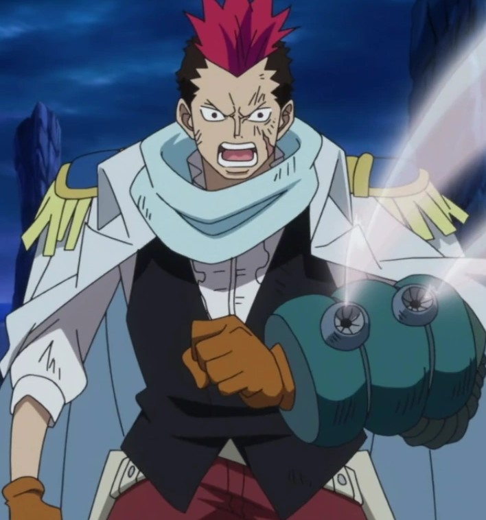

Les Différentes Races jouable en tant que Marine

Vous avez 3 races disponibles
Les Humains :

Les humain sont les êtres les plus nombreux et qui peuple 95% de cette planète
La faiblesse des êtres humains dans le monde de One Piece fait qu'ils sont souvent vu comme faibles par d'autres races cela conduit les hommes à se venger en prenant une attitude raciste envers les autres espèces et de faire couler le sang a flot
- Taille : 1m60 à 2m30
- Espérance de vie : 90 ans
- Poids : 40 à 250 Kg
- Bonus racial : +15 SOC
- Malus racial : -15 PER
- PV de départ : H♂ : 10PV / F♀ : 8PV
- Capacité raciale : Rage : lorsque tes PV tombe en dessous de 25% tu inflige +2dgt
Les demi-géant ou humain de grande taille :

Les Demi-Géant sont des humains avec une taille plus évolué que la normal [exemple Barbe blanche/Moria/les soeur cadet Boa, etc...] mais reste quand même bien plus petit que les géants de base du genre [Dorry, Brogy, Haguard .D Sauro ou même Oars], leur résistance est moindre qu'un géant mais 2 à 4x plus importante qu'un humain de base. Ils représentent 0,008% de la population mondial
- Taille : 3m à 6m50
- Espérance de vie : 120 ans
- Poids : 100kg à 1 tonne
- Bonus racial : +15 CON
- Malus racial : -15 AGI
- PV de départ : H♂ : 14PV / F♀ : 12PV
- Capacité raciale : Intimidation :Vous poussez un hurlement bien viril qui déstabilise votre adversaire sur 1D4 tour leurs infligeant un malus de -15% a ses futur jet durant le nombre de tour déstabilisé.
Si vous le tentez avec un lancé de dés, si vous faites un coup critique vous infligez l’état Peur à tous les adversaire présent sur le terrain excepté Boss et demi-boss, tous les adversaire seront hors combat et fuiront. en revanche le demi bosse aura un malus de -20% et -10% pour le Boss à leurs futurs jet sur 3 tour.
Les cyborgs :

Les Cyborgs ont des pièces mécaniques, qui sont généralement visibles à l'extérieur. En dehors de cela, ils peuvent apparaître comme un être humain normal. Les modifications peuvent être plus apparentes quand ils reçoivent des blessures qui peuvent laisser leurs pièces mécaniques exposées à la vue de tous.
- Taille : 1m80 à 4m
- Espérance de vie : 100 ans
- Poids : 80 à 300Kg
- Bonus racial : +10 CON +5 INT
- Malus racial : -15 DEX
- PV de départ : H♂ : 12PV / F♀ : 12PV
- Capacité raciale : Analyse point faible : une fois par session tu peux analyser un groupe d'adversaire même Boss et connaître toute leurs compétences ainsi que leurs faiblesses. Les futur jet adverse durant le combat auront un malus de -20% [-15% demi boss et -10% sur Boss] sur leurs stats de base. Si informé au autre membres de votre équipe le résultat de votre analyse leurs permettra de bénéficier du même aventage que toi.